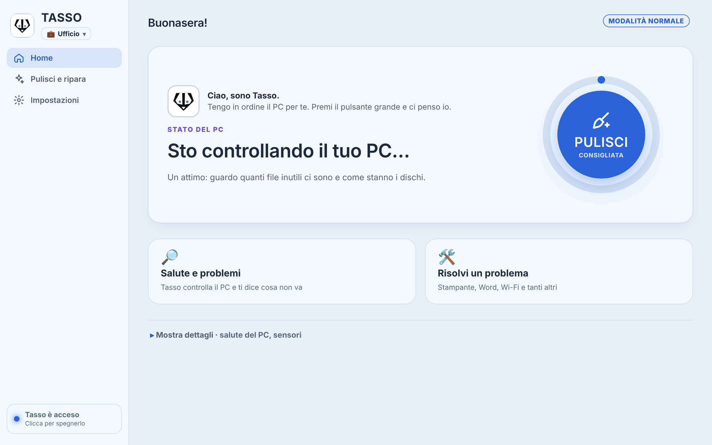
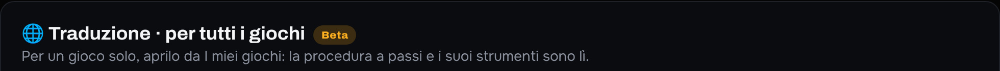
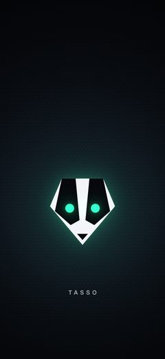
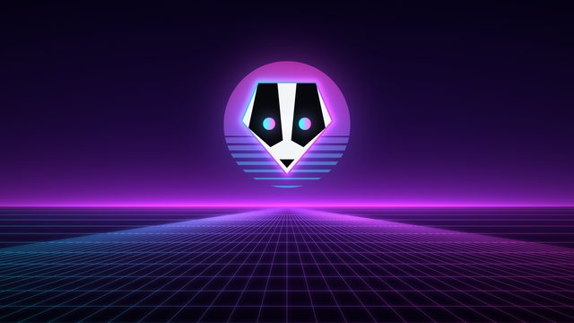
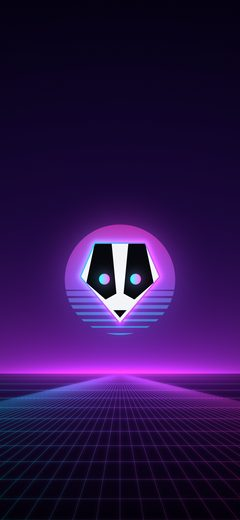
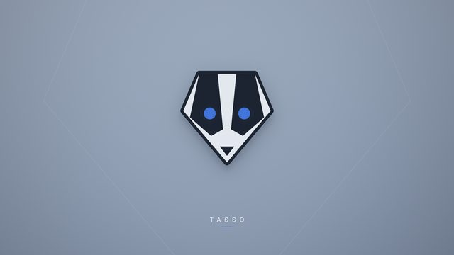

Gaming · Boost
More FPS without making your PC less safe.
One button before you play, and your PC thinks only about the game.

For people who play and want more FPS, with no hassle.
For people who work and want a PC that doesn’t freeze.
For people who play and want more FPS, with no hassle.
For people who work and want a PC that doesn’t freeze.

It cleans, repairs and prepares your PC for gaming or for work. And inside you also get the in-game translator, Tasso Zip and Tasso PDF.
One button before you play, and your PC thinks only about the game.
Tasso never touches your games, accounts, saves or anti-cheat files.
If your problem isn’t on the list, type it into the search box in your own words.
Printer, documents, spreadsheets, email, video calls, Wi-Fi, screens. Click the problem you have and Tasso tries to fix it for you.

Beta. We’re improving quality and speed: some lines may come out odd or stay in the game’s original language.
In the game, press F7 and Tasso writes quests, dialogue and menus in your language, right on top of the game. Press F7 again and the translation turns off.

Two simple programs that come in the same installer as Tasso. You can also open them with a right-click.


Three new themes, on top of the ones already there. Change them in Settings whenever you like.


Like these colours? Download the Tasso wallpapers for your PC and phone.
Seven free wallpapers, for your PC in 4K and for your phone. Press the button to download.


Black and green, like Tasso in Gaming mode.


Purple and blue, with a neon sun.


Black and gold, with golden rays.


Dark grey and silver, clean and elegant.


Soft blue-grey, light and calm.


Deep blue, easy on the eyes all day.


Warm beige, simple and clean.
On your PC open the downloaded image, then right-click and choose “Set as desktop background”.
On your phone open the picture in your gallery and choose “Set as wallpaper”.
Every time my PC slowed down, I looked for a program to fix it. I tried lots of them: charts full of numbers, promises of a "PC twice as fast", and in the end the computer was the same as before.
So I made Tasso. It doesn’t make things up and doesn’t add fake features. It takes the PC you already have and brings it to the best it can be: clean, fixed, with nothing holding it back.
Sergio Tassoni, creator of Tasso

One installer. Inside, you choose what to install: Tasso, Tasso Zip, Tasso PDF and the translator languages.
Download TassoTasso grows with what you write to me. The best ideas end up in the next versions, and I say so when it happens.
tasso.services@proton.me
No. Download it, open it and use it. No account to create.
Yes. Tasso, Tasso Zip and Tasso PDF are free, with no ads.
Yes, if you have 64-bit Windows 10 or Windows 11. It works on gaming PCs, laptops and office computers.
It’s in Beta: it reads the screen, so it works with almost every game. Some lines may come out odd or stay in the original language.
The one closest to how you use your PC. You can switch any time from the menu at the top left.
Send an email to tasso.services@proton.me. I read everything.